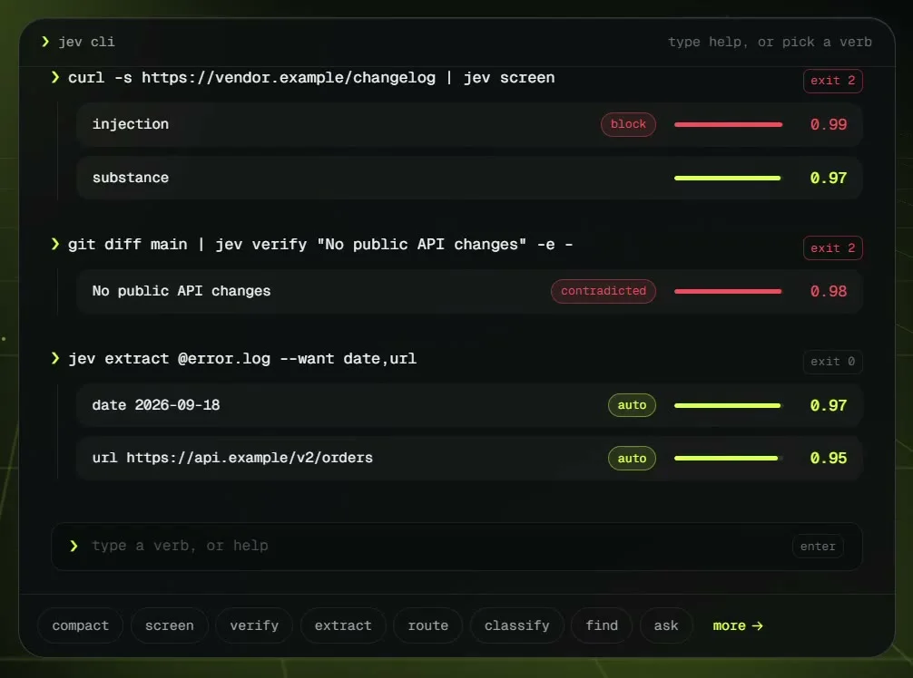
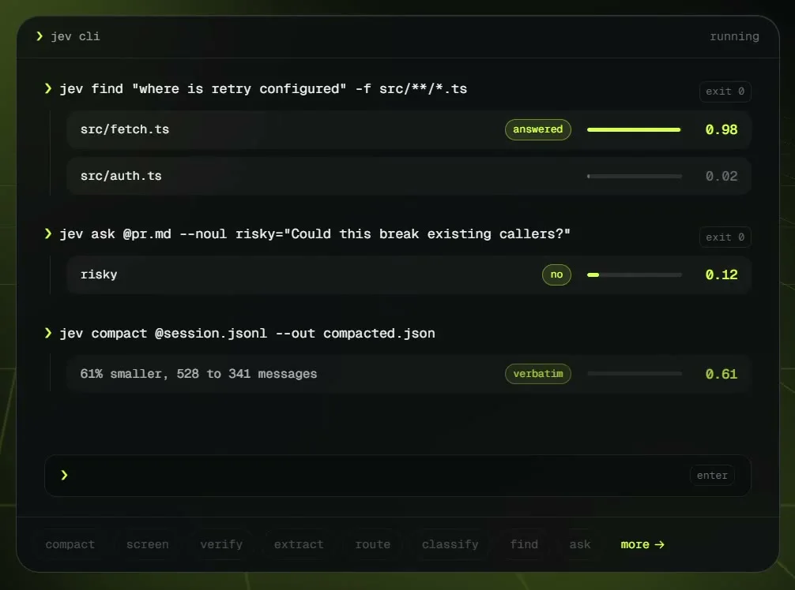

このUIがしていること
判断結果を、画面の表示だけでなく終了コードとしても返すので、シェルのパイプやCI、エージェントのフックに直接つなげられる。人間には色付きのラベルとバーで、プログラムにはexitコードで、同じ判断が二通りに伝わる。
- 同じ画面に、ブロック（赤）と通過（黄緑）が色で区別されて並ぶ。
- 動詞ごとに数値の意味が違う可能性がある。たとえば compact の 0.61 は「61% smaller」と同じ値で、確率とは別の指標かもしれない。確率とconfidenceを混同しない表示が要る。
- 投稿文はコマンド一覧を並べ、Claude Codeのプラグインと圧縮フックにも触れている。
キャプチャ
{kind=link}

（原寸の画像を開く）{kind=link}

（原寸の画像を開く）見る箇所各コマンドの右側に並ぶ判定ラベル、確率バー、数値、右上の exit コード
入力から画面の変化まで
-
判断への入力
標準入力やファイル（curlの出力、git diff、error.log、pr.md、session.jsonl）と、動詞（screen / verify / extract / find / ask / compact など）。
-
Jevの判断
screen は injection と substance、verify は主張と証拠の照合（contradicted 0.98）、extract は date と url（auto 0.97 / 0.95）、find は候補の順位付け（src/fetch.ts 0.98）、ask は yes/no（risky を no 0.12）を返す。
-
結果がUIをどう変えるか
各行に判定ラベル（block / contradicted / auto / answered / no / verbatim）、確率バー、数値を出し、右上にexitコード（block と contradicted は exit 2、他は exit 0）を付ける。
- 判断型の見立て
- 複合出典に明記
- 投稿が verify、classify、route、ask（yes/no・選択・スコア）などの動詞を並べ、画面にも ask の --noul の指定が見える。
Jevとの適合
「判断を出してコードが動く」というJevの用途に、CLIは自然に合う。ただし動画の例は演出で、しきい値をどこに置くか、失敗時に止めるか通すかは利用者の設計に委ねられる。
確認範囲と未確認事項
作者の投稿に添付された端末風のデモ動画から確認。作者が示すWebサイトは未アクセス。動画は入力例（架空のURL・ファイル）を使った演出で、実際のプロジェクトでの利用は確認できない。
- 確認済み動画から得た2枚の静止画に見えるコマンド、判定ラベル、数値、exitコード、投稿文の機能一覧
- 未検証実際のプロジェクトでの動作、判定の精度、しきい値の既定値、各数値の厳密な意味、npmパッケージの中身
- 推定扱い数値が確率・confidence・別の指標のどれか。動詞ごとに異なる可能性がある
- 引用X投稿は2026-09-20（UTC）。動画から必要な範囲の静止画を切り出して引用。権利は作者に帰属する